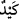
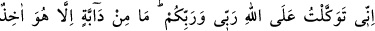
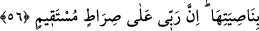

daha baştan reddediyor, sonra da zarar veremeyeceklerini şöyle belirtiyor: “Haydi
hepiniz bana tuzak kurun,” “
=tuzak kurmak”, başkasına gizlice zarar vermek
istemektir. Yaratılanlar hakkında ‘kötü hile’ anlamına gelirken, Allah hakkında
‘yaratılanların fiillerine karşılık olarak yerli yerinde plan kurmak’ mânâsına gelir. Buna
göre mânâ şöyledir: Şayet ilahlarınızın kendileri hakkında ileri geri konuşan, onlara
kulluk edilmesini engelleyen kişilere zarar verebileceği şeklindeki iddianız doğruysa
ben sizin bu tanrılarınızdan uzağım. O halde haydi hepiniz, siz ve tanrılarınız bir araya
gelerek tuzak hazırlayın.
“Sonra da bana mühlet vermeyin.” Bu konuda, bana ne vakit verin, ne de müsâmaha
gösterin. Bu ifâde onların tanrılarının onların söylediklerini yerine getirmeye muktedir
oldukları iddiâlarına göre ve Hûd (a.s.)’ın hem onlardan hem de tanrılarından uzak
olmasına göre söylenmiştir. Nitekim el-İrşâd’da böyle geçmektedir.
Burada nefsin, sıfatlarının, şeytan, hevâ ve dünyanın dâimâ kalbe tuzak kurduğuna;
rabbânî bir destekle desteklenen kalbe ise bunların tuzağının ulaşamayacağına işâret
vardır.
Âlemin hepsi deniz derya olsa
Sen Hak ile oldukça ayağını yaş eylemez
56. “Ben, benim de Rabb’im, sizin de Rabb’iniz olan Allah’a dayandım. Yürüyen
hiçbir canlı yoktur ki O, onun perçeminden tutmuş olmasın. Şüphesiz Rabb’im
dosdoğru yoldadır.”
“Ben, benim de Rabb’im, sizin de Rabb’iniz olan Allah’a dayandım.” Bana zarar
vermeye ne sizin ne de tanrılarınızın gücü yeter. Çünkü ben her şeye gücü yeten Allah’a
tevekkül edip dayanıyorum. O, hem benim hem de bütün varlıkların yegâne sahibidir.
Çünkü yeryüzünde gezip dolaşan “yürüyen hiçbir canlı yoktur ki O” Allah Teâlâ
“onun perçeminden tutmuş olmasın.”
Araplara göre perçem başın ön kısmındaki saçların bitim yeridir. O bölgedeki saçlara
da bittikleri yerin adına izâfeten ‘perçem’ adı verilmektedir. İnsanın perçeminden
tutmak, onu boyunduruk altına almak, ona galip gelmek ve dilediği gibi tasarruf
edebilmektir. Kişinin perçemini tutanın kimsenin elinde/tasarrufunda olmasıdır. Bir
kimsenin zelil olduğunu, birine boyun eğmek durumunda olduğunu belirtmek isteyen
Araplar, “Onun perçemi falancanın elindedir” yani o ona boyun eğmektedir, derler.
Çünkü perçeminden tuttuğunuz herkesi boyunduruk altına almışsınız demektir. Allah